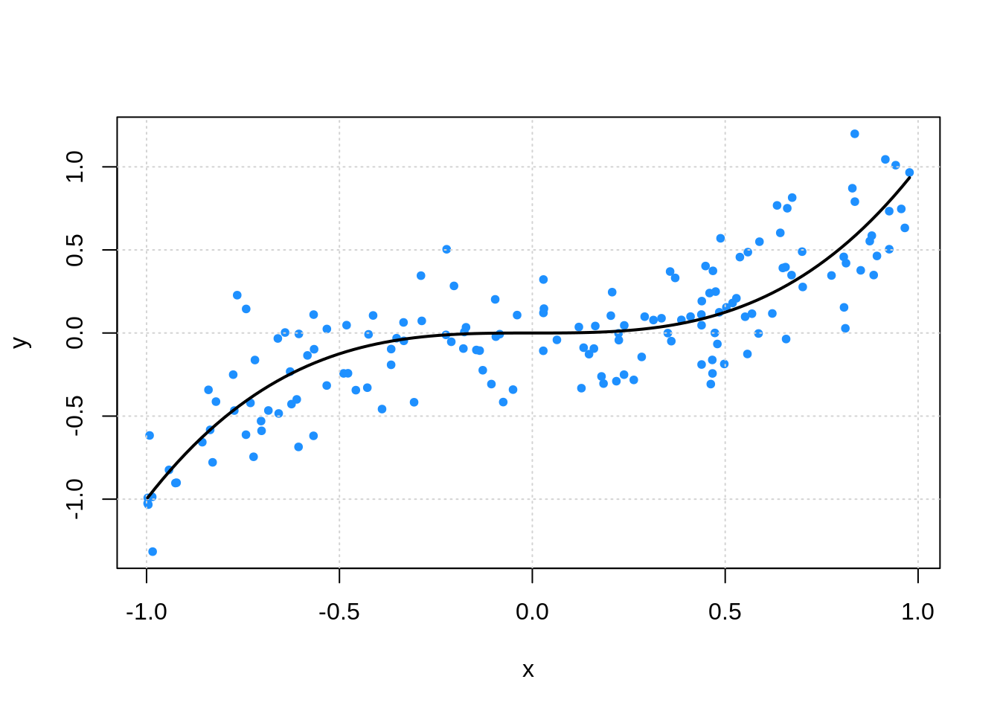
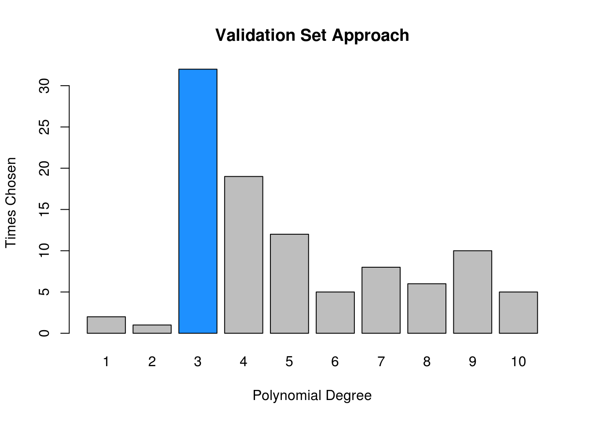
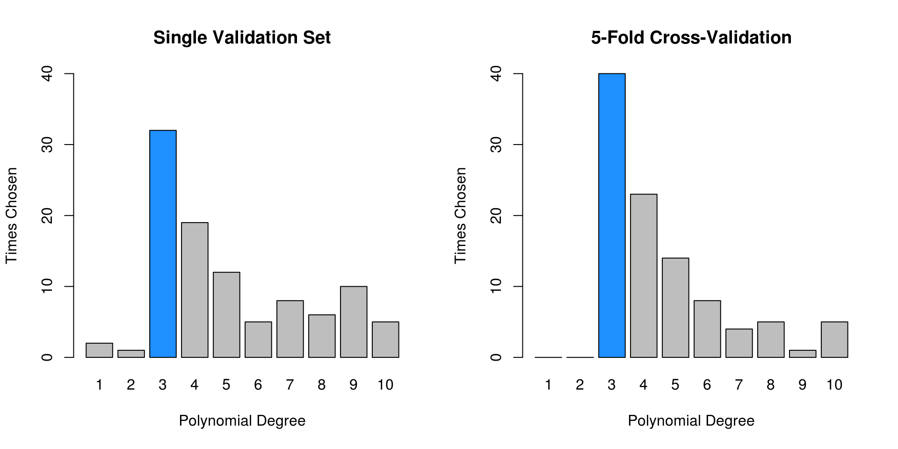
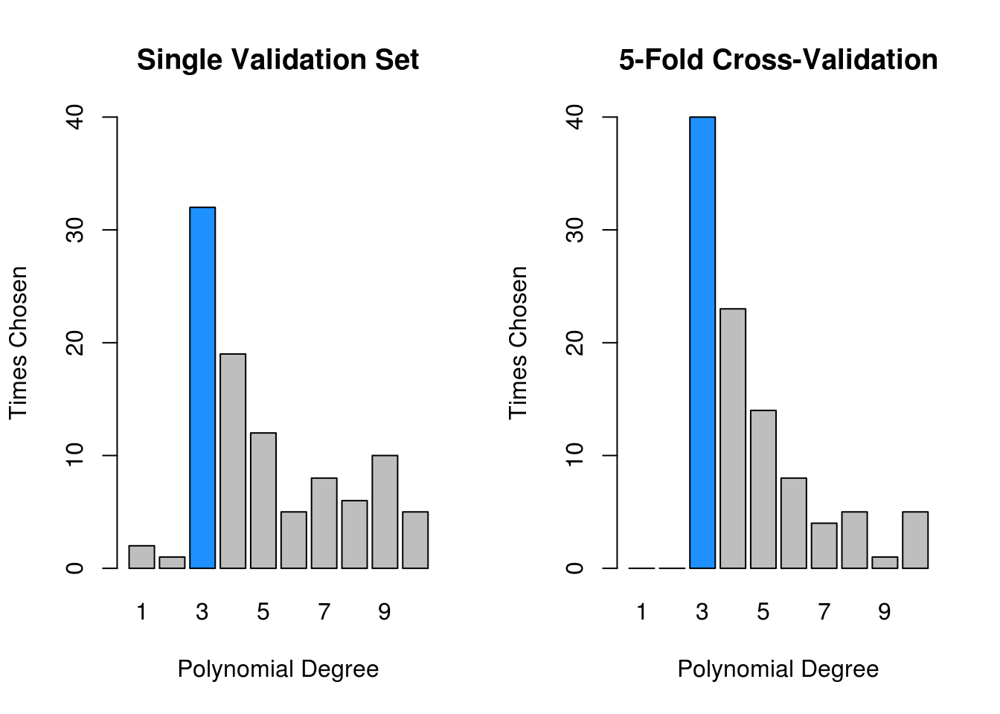
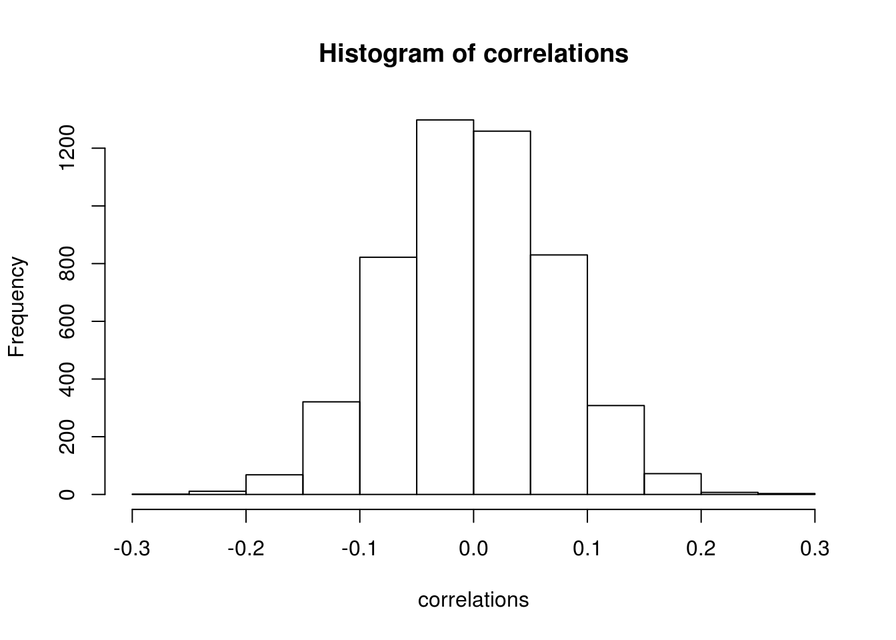

Chapter 20 Resampling
- NOTE: This chapter is currently be re-written and will likely change considerably in the near future. It is currently lacking in a number of ways.
- TODO: add narrative
get_sim_data = function(sample_size = 100) {
x = runif(n = sample_size, min = -1, max = 1)
y = rnorm(n = sample_size, mean = x ^ 3, sd = 0.25)
data.frame(x, y)
}\[ Y \sim N(\mu = x^3, \sigma^2 = 0.25 ^ 2) \]
set.seed(42)
sim_data = get_sim_data(sample_size = 200)
sim_idx = sample(1:nrow(sim_data), 100)
sim_trn = sim_data[sim_idx, ]
sim_tst = sim_data[-sim_idx, ]plot(y ~ x, data = sim_trn, col = "dodgerblue", pch = 20)
curve(x ^ 3, add = TRUE, col = "grey", lwd = 2)
calc_rmse = function(actual, predicted) {
sqrt(mean((actual - predicted) ^ 2))
}20.1 Validation-Set Approach
num_sims = 100
num_degrees = 10
val_rmse = matrix(0, ncol = num_degrees, nrow = num_sims)set.seed(42)
for (i in 1:num_sims) {
# simulate data
sim_data = get_sim_data(sample_size = 200)
# set aside validation set
sim_idx = sample(1:nrow(sim_data), 160)
sim_trn = sim_data[sim_idx, ]
sim_val = sim_data[-sim_idx, ]
# fit models and store RMSE
for (j in 1:num_degrees) {
#fit model
fit = glm(y ~ poly(x, degree = j), data = sim_trn)
# calculate error
val_rmse[i, j] = calc_rmse(actual = sim_val$y, predicted = predict(fit, sim_val))
}
}
20.2 Cross-Validation
Instead of using a single test-train split, we instead look to use \(K\)-fold cross-validation.
- TODO: Can be used with any metric
\[ \text{CV}_{K}\text{-RMSE} = \sum_{k = 1}^{K} \frac{n_k}{n} \text{RMSE}_k \]
\[ \text{RMSE}_k = \sqrt{\frac{1}{n_k} \sum_{i \in C_k} \left( y_i - \hat{f}(x_i) \right)^2 } \]
- \(n_k\) is the number of observations in fold \(k\)
- \(C_k\) are the observations in fold \(k\)
If \(n_k\) is the same in each fold, then
\[ \text{CV}_{K}\text{-RMSE} = \frac{1}{K}\sum_{k = 1}^{K} \text{RMSE}_k \]
There are many ways to perform cross-validation R, depending on the method of interest. Some methods, for example glm() through boot::cv.glm() and knn() through knn.cv() have cross-validation capabilities built-in. We’ll use glm() for illustration. First we need to convince ourselves that glm() can be used to perform the same tasks as lm().
data(Auto, package = "ISLR")glm_fit = glm(mpg ~ horsepower, data = Auto)
coef(glm_fit)## (Intercept) horsepower
## 39.9358610 -0.1578447lm_fit = lm(mpg ~ horsepower, data = Auto)
coef(lm_fit)## (Intercept) horsepower
## 39.9358610 -0.1578447By default, cv.glm() will report leave-one-out cross-validation (LOOCV).
glm_fit = glm(mpg ~ horsepower, data = Auto)
loocv_rmse = sqrt(boot::cv.glm(Auto, glm_fit)$delta)
sqrt(loocv_rmse)## [1] 2.218682 2.218674sqrt(loocv_rmse[1])## [1] 2.218682We are actually given two values. The first is exactly the LOOCV-RMSE. The second is a minor correction that we will not worry about. We take a square root to obtain LOOCV-RMSE.
loocv_rmse_poly = rep(0, times = 10)
for (i in seq_along(loocv_rmse_poly)) {
glm_fit = glm(mpg ~ poly(horsepower, i), data = Auto)
loocv_rmse_poly[i] = sqrt(boot::cv.glm(Auto, glm_fit)$delta[1])
}
loocv_rmse_poly## [1] 4.922552 4.387279 4.397156 4.407316 4.362707 4.356449 4.339706
## [8] 4.354440 4.366764 4.414854plot(loocv_rmse_poly, type = "b", col = "dodgerblue",
main = "LOOCV-RMSE vs Polynomial Degree",
ylab = "LOOCV-RMSE", xlab = "Polynomial Degree")
If you run the above code locally, you will notice that is painfully slow. We are fitting each of the 10 models 392 times, that is, each model \(n\) times, once with each data point left out. (Note: in this case, for a linear model, there is actually a shortcut formula which would allow us to obtain LOOCV-RMSE from a single fit to the data. See details in ISL as well as a link below.)
We could instead use \(k\)-fold cross-validation.
set.seed(17)
cv_10_rmse_poly = rep(0, times = 10)
for (i in seq_along(cv_10_rmse_poly)) {
glm_fit = glm(mpg ~ poly(horsepower, i), data = Auto)
cv_10_rmse_poly[i] = sqrt(boot::cv.glm(Auto, glm_fit, K = 10)$delta[1])
}
cv_10_rmse_poly## [1] 4.919878 4.380552 4.393929 4.397498 4.345010 4.361311 4.346963
## [8] 4.439821 4.353321 4.416102plot(cv_10_rmse_poly, type = "b", col = "dodgerblue",
main = "10 Fold CV-RMSE vs Polynomial Degree",
ylab = "10 Fold CV-RMSE", xlab = "Polynomial Degree")
Here we chose 10-fold cross-validation. Notice it is much faster. In practice, we usually stick to 5 or 10-fold CV.
Returning to our simulated data:
cv_rmse = matrix(0, ncol = num_degrees, nrow = num_sims)set.seed(42)
for (i in 1:num_sims) {
# simulate data, use all data for training
sim_trn = get_sim_data(sample_size = 200)
# fit models and store RMSE
for (j in 1:num_degrees) {
#fit model
fit = glm(y ~ poly(x, degree = j), data = sim_trn)
# calculate error
cv_rmse[i, j] = sqrt(boot::cv.glm(sim_trn, fit, K = 5)$delta[1])
}
}
| Polynomial Degree | Mean, Val | SD, Val | Mean, CV | SD, CV |
|---|---|---|---|---|
| 1 | 0.292 | 0.031 | 0.294 | 0.015 |
| 2 | 0.293 | 0.031 | 0.295 | 0.015 |
| 3 | 0.252 | 0.028 | 0.255 | 0.012 |
| 4 | 0.253 | 0.028 | 0.255 | 0.013 |
| 5 | 0.254 | 0.028 | 0.256 | 0.013 |
| 6 | 0.254 | 0.028 | 0.257 | 0.013 |
| 7 | 0.255 | 0.028 | 0.258 | 0.013 |
| 8 | 0.256 | 0.029 | 0.258 | 0.013 |
| 9 | 0.257 | 0.029 | 0.261 | 0.013 |
| 10 | 0.259 | 0.030 | 0.262 | 0.014 |
- TODO: cv overestimating (worse for reporting)
- TODO: cv less variable (better for selecting)
par(mfrow = c(1, 2))
matplot(t(val_rmse)[, 1:10], pch = 20, type = "b", ylim = c(0.17, 0.35), xlab = "Polynomial Degree", ylab = "RMSE", main = "Single Validation Set")
matplot(t(cv_rmse)[, 1:10], pch = 20, type = "b", ylim = c(0.17, 0.35), xlab = "Polynomial Degree", ylab = "RMSE", main = "5-Fold Cross-Validation")
20.2.1 Manual Cross-Validation
For methods that do not have a built-in ability to perform cross-validation, or for methods that have limited cross-validation capability, we will need to write our own code for cross-validation. (Spoiler: This is not true, but let’s pretend it is, so we can see how to perform cross-validation from scratch.)
This essentially amounts to randomly splitting the data, then looping over the splits. The createFolds() function from the caret() package will make this much easier.
caret::createFolds(sim_data$y, k = 10)## $Fold01
## [1] 5 6 28 37 44 45 61 64 71 90 110 128 133 138 146 154 160
## [18] 169 174 184
##
## $Fold02
## [1] 1 68 72 75 87 95 100 101 109 113 114 117 124 132 135 182 188
## [18] 192 195 196
##
## $Fold03
## [1] 2 4 11 18 23 24 26 34 47 58 62 69 98 115 140 163 165
## [18] 170 173 190
##
## $Fold04
## [1] 3 14 21 38 57 66 79 80 84 94 107 122 127 130 147 148 153
## [18] 166 189 194
##
## $Fold05
## [1] 40 41 59 63 65 73 82 83 96 103 108 119 120 149 150 158 167
## [18] 171 187 199
##
## $Fold06
## [1] 16 39 43 51 56 67 74 76 78 105 118 126 131 136 157 159 178
## [18] 185 186 197
##
## $Fold07
## [1] 17 25 48 49 52 86 88 89 91 92 93 112 121 152 155 162 164
## [18] 168 175 181
##
## $Fold08
## [1] 7 19 20 27 30 35 55 70 99 111 129 137 141 143 145 161 177
## [18] 179 183 200
##
## $Fold09
## [1] 9 10 12 13 29 31 33 36 46 77 85 97 102 116 134 151 172
## [18] 176 180 193
##
## $Fold10
## [1] 8 15 22 32 42 50 53 54 60 81 104 106 123 125 139 142 144
## [18] 156 191 198Can you use this to verify the 10-fold CV results from above?
20.2.2 Test Data
The following example illustrates the need for a dedicated test set which is never used in model training. If for no other reason, it gives us a quick sanity check that we have cross-validated correctly.
To be specific we will test-train split the data, then perform cross-validation within the training data.
calc_err = function(actual, predicted) {
mean(actual != predicted)
}# simulate data
# y is 0/1
# X are independent N(0,1) variables
# X has no relationship with the response
# p >>> n
set.seed(430)
n = 400
p = 5000
X = replicate(p, rnorm(n))
y = c(rbinom(n = n, size = 1, prob = 0.5))# first n/2 observations are used for training
# last n/2 observations used for testing
# both are 50% 0s and 50% 1s
# cv will be done inside train data
full_data = data.frame(y, X)
trn_idx = sample(1:nrow(full_data), trunc(nrow(full_data) * 0.5))
trn_data = full_data[trn_idx, ]
tst_data = full_data[-trn_idx, ]First, we use the screen-then-validate approach.
# find correlation between y and each predictor variable
correlations = apply(trn_data[, -1], 2, cor, y = trn_data$y)
hist(correlations)
# select the 25 largest (absolute) correlation
# these should be "useful" for prediction
selected = order(abs(correlations), decreasing = TRUE)[1:25]
correlations[selected]## X2717 X32 X2665 X2371 X4611 X3573
## 0.2716135 0.2547580 -0.2536404 0.2530664 -0.2466395 0.2428334
## X1701 X4116 X1653 X1024 X3334 X3094
## 0.2329670 -0.2297586 -0.2195325 -0.2174270 0.2162564 -0.2124802
## X2327 X3491 X2299 X4900 X2078 X941
## -0.2110879 0.2108721 -0.2099112 -0.2073970 0.2069720 0.2055869
## X320 X2680 X4204 X3820 X1619 X3438
## 0.2051092 -0.2048960 -0.2043215 -0.2001827 -0.1996106 -0.1985622
## X115
## -0.1969733# subset the test and training data based on the selected predictors
trn_screen = trn_data[c(1, selected)]
tst_screen = tst_data[c(1, selected)]
# fit an additive logistic regression
# use 10-fold cross-validation to obtain an estimate of test accuracy
# horribly optimistic
glm_fit = glm(y ~ ., data = trn_screen, family = "binomial")
boot::cv.glm(trn_screen, glm_fit, K = 10)$delta[1]## [1] 0.284542# get test accuracy, which we expect to be 0.50
# no better than guessing
glm_pred = (predict(glm_fit, newdata = tst_screen, type = "response") > 0.5) * 1
calc_err(predicted = glm_pred, actual = tst_screen$y)## [1] 0.545Now, we will correctly screen-while-validating.
# use the caret package to obtain 10 "folds"
folds = caret::createFolds(trn_data$y, k = 10)
# for each fold
# - pre-screen variables on the 9 training folds
# - fit model to these variables
# - get accuracy on validation fold
fold_err = rep(0, length(folds))
for (i in seq_along(folds)) {
# split for fold i
trn_fold = trn_data[-folds[[i]],]
val_fold = trn_data[folds[[i]],]
# screening for fold i
correlations = apply(trn_fold[, -1], 2, cor, y = trn_fold[,1])
selected = order(abs(correlations), decreasing = TRUE)[1:25]
trn_fold_screen = trn_fold[ ,c(1,selected)]
val_fold_screen = val_fold[ ,c(1,selected)]
# accuracy for fold i
glm_fit = glm(y ~ ., data = trn_fold_screen, family = "binomial")
glm_pred = (predict(glm_fit, newdata = val_fold_screen, type = "response") > 0.5) * 1
fold_err[i] = mean(glm_pred == val_fold_screen$y)
}
# report all 10 validation fold accuracies
fold_err## [1] 0.40 0.35 0.45 0.50 0.45 0.30 0.60 0.55 0.60 0.75# properly cross-validated error
# this roughly matches what we expect in the test set
mean(fold_err)## [1] 0.49520.3 Bootstrap
ISL discusses the bootstrap, which is another resampling method. However, it is less relevant to the statistical learning tasks we will encounter. It could be used to replace cross-validation, but encounters significantly more computation.
It could be more useful if we were to attempt to calculate the bias and variance of a prediction (estimate) without access to the data generating process. Return to the bias-variance tradeoff chapter and think about how the bootstrap could be used to obtain estimates of bias and variance with a single dataset, instead of repeated simulated datasets.
20.4 External Links
- YouTube: Cross-Validation, Part 1 - Video from user “mathematicalmonk” which introduces \(K\)-fold cross-validation in greater detail.
- YouTube: Cross-Validation, Part 2 - Continuation which discusses selection and resampling strategies.
- YouTube: Cross-Validation, Part 3 - Continuation which discusses choice of \(K\).
- Blog: Fast Computation of Cross-Validation in Linear Models - Details for using leverage to speed-up LOOCV for linear models.
- OTexts: Bootstrap - Some brief mathematical details of the bootstrap.
20.5 rmarkdown
The rmarkdown file for this chapter can be found here. The file was created using R version 3.4.2. The following packages (and their dependencies) were loaded when knitting this file:
## NULL